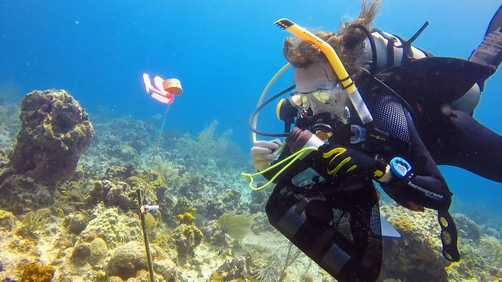
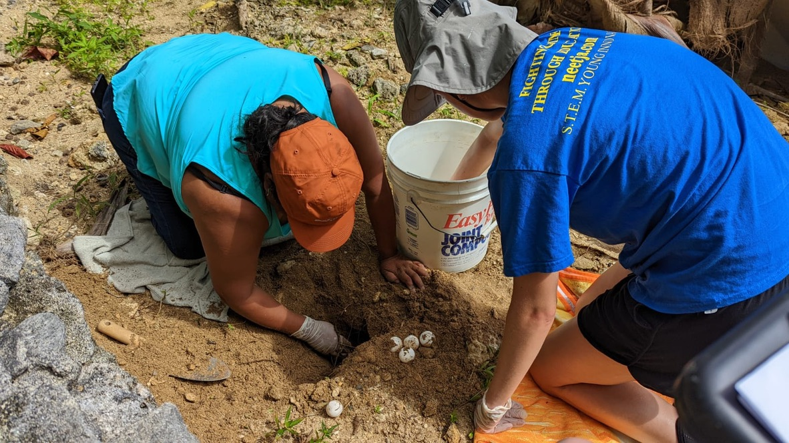
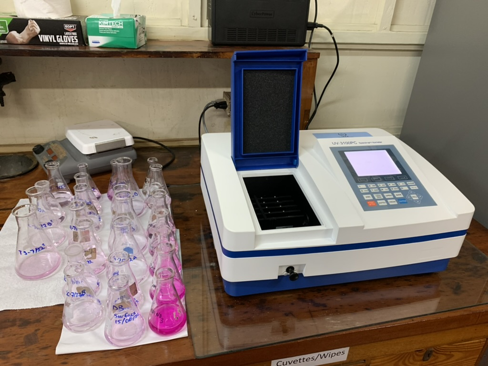
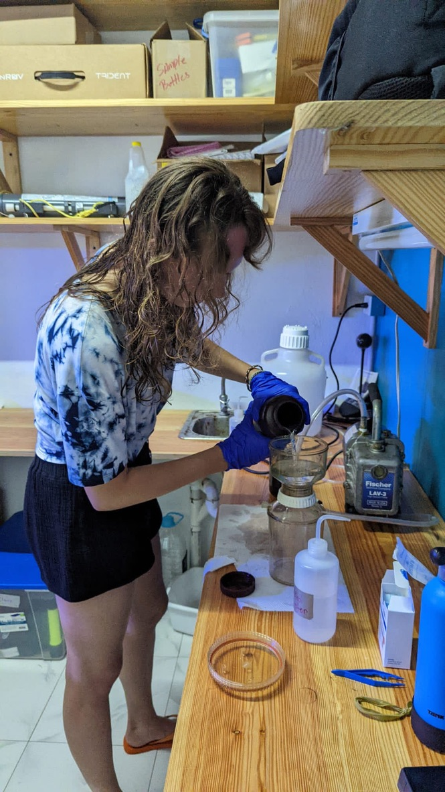
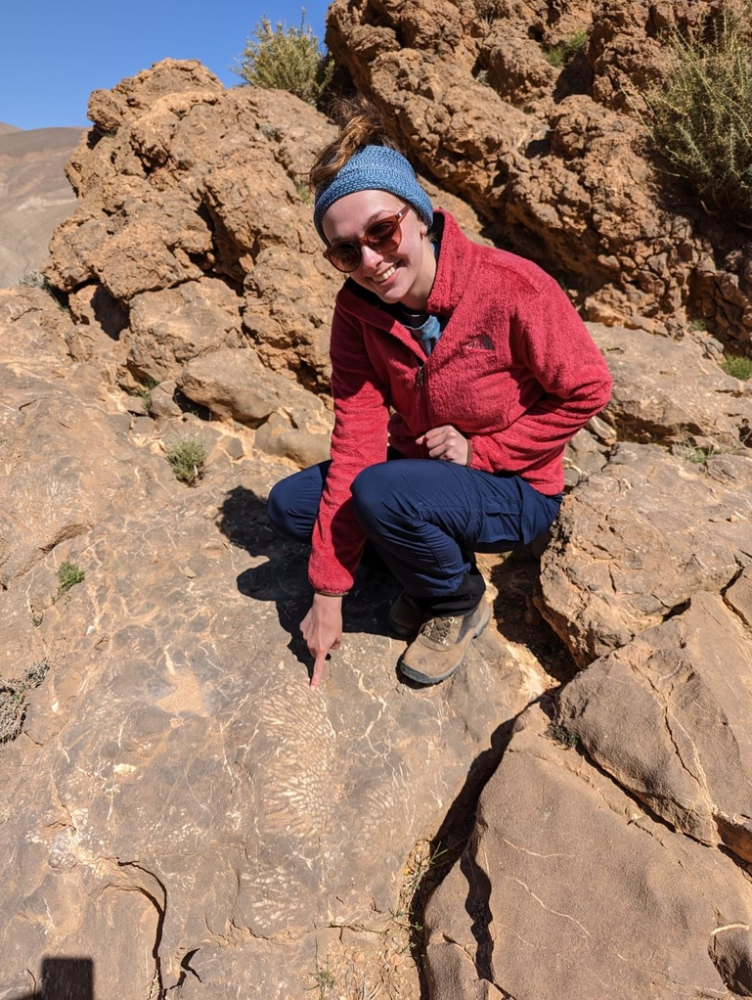
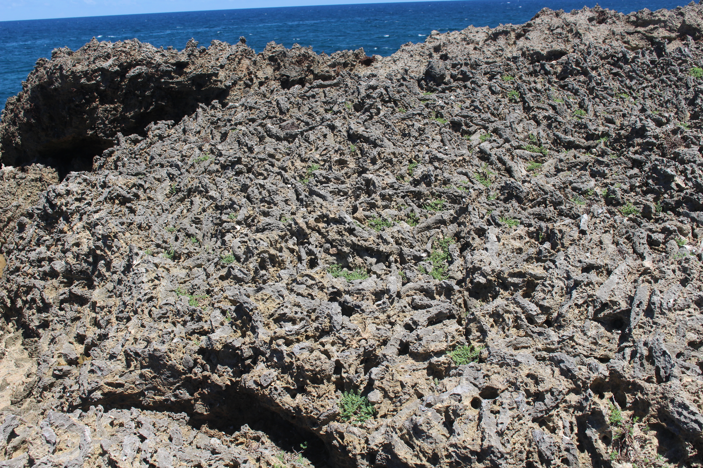
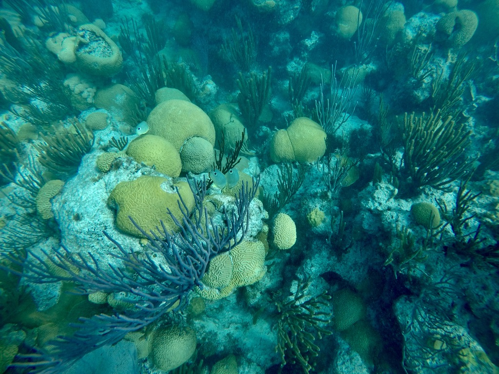

Research
Coral reefs are changing rapidly, but modern observations capture only a small part of their ecological history. My research integrates field ecology, the fossil record, coral functional traits, and quantitative models to understand ecological change and provide context for reef conservation.
Reef recovery in a Jamaican sanctuary
I use long-term monitoring data from the East Portland Special Fishery Conservation Area in northeast Jamaica to investigate how coral reef communities respond to protection and disturbance. Working with Jamaican collaborators and the Alligator Head Foundation, I examine coral cover, fish communities, herbivory, macroalgae, and environmental conditions.
Our monitoring reveals different responses across the ecosystem. Fish populations initially responded positively to protection, but benthic communities did not recover alongside them. Coral disease, bleaching, and changes in grazing communities have further altered these reefs. Monitoring several parts of a reef ecosystem is essential for evaluating conservation outcomes.
Partnerships with the people who manage and depend on these reefs are central to this work. I share monitoring results with sanctuary partners to help connect ecological findings with decisions about reef management.



Water chemistry and coastal ecosystems
I also collaborate on water-quality research in northeast Jamaica, including nutrient monitoring, carbonate chemistry, and the influence of freshwater and groundwater inputs on coastal reef environments. Our work includes around-the-clock sampling to examine how water chemistry changes over diel cycles, as well as investigations of land-to-sea connections that affect reef conditions.
These measurements complement reef monitoring by connecting ecological changes with the physical and chemical conditions surrounding them.


Fossil reefs as ecological baselines
Modern reefs are often used to define conservation targets even though many have experienced decades or centuries of ecological change. I use fossil assemblages to extend ecological observations beyond modern monitoring and investigate what coral communities looked like before recent degradation.
In northeast Jamaica, Late Pleistocene reefs preserve assemblages dominated by framework-building Acropora, which are now effectively absent from comparable modern reefs. By comparing fossil and living communities, I investigate the magnitude of ecological change and provide the historical context needed to evaluate recovery.


Forecasting coral habitat with fossils
Conservation planning increasingly relies on models of species' environmental requirements and future distributions. Yet models calibrated only with occurrences from already-degraded modern reefs may underestimate the environmental conditions species can occupy, because contemporary distributions reflect historical losses as well as environmental suitability.
I integrate fossil occurrence records with modern observations to improve ecological niche models for Caribbean corals. Including fossil data identified more than 110,000 km² of potentially suitable habitat under future climate scenarios that modern-only models missed. This demonstrates how the fossil record can improve our understanding of environmental niches and the predictions used in conservation planning.

Coral ecometrics
My current research examines how environmental conditions relate to the distribution of traits across coral communities. In particular, I investigate coral growth forms and skeletal traits, including corallite dimensions, to develop quantitative relationships between community characteristics and their environments.
These trait-environment relationships may help identify communities that are poorly matched to present conditions, investigate environmental change in the fossil record, and anticipate ecological vulnerability. I am developing approaches that combine coral trait data, environmental datasets, and models at global and regional scales.
Ongoing research